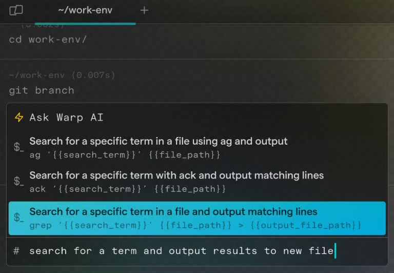
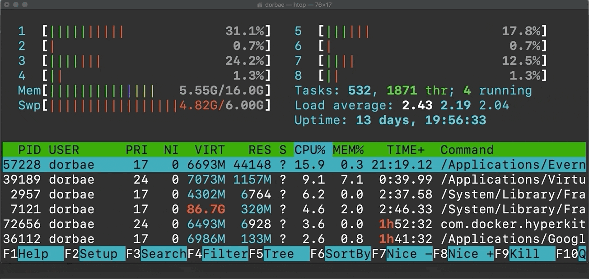
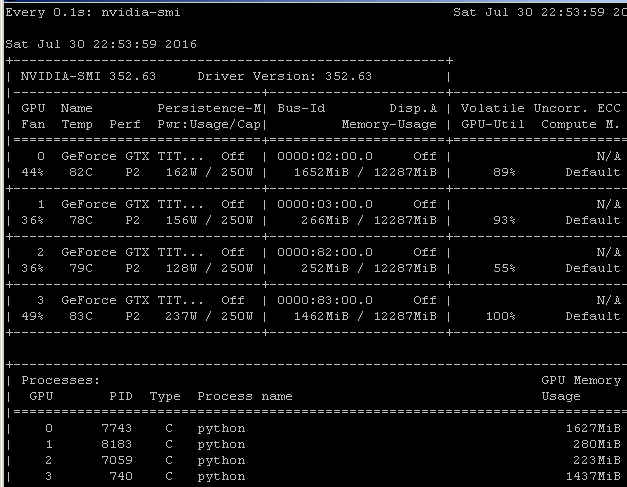

Linux Basics
Основы командной строки, файловая система, права доступа и типичные задачи для ML и DevOps: навигация, поиск, процессы и окружение.
-
Linux для MLщика
Linux — это семейство операционных систем с открытым исходным кодом, часто используемых в серверных средах и при разработке ML-проектов. Некоторые из популярных дистрибутивов — Ubuntu, Debian, Arch Linux. Обычно на серваках стоит Ubuntu.
Большинство серверов и облачных платформ (AWS, Azure, Google Cloud) работают под Linux. Здесь вы будете обучать модели, хранить данные и запускать эксперименты.
Linux — стандарт в ML и DevOps, так как он бесплатный, гибкий, стабилен, и большинство библиотек и драйверов (например, NVIDIA CUDA) поддерживаются в первую очередь под него.
Почему Linux важен для ML?
Большинство серверов, облачных платформ, CUDA-драйверов и production-инструментов работают в Linux-среде.
Где MLщик чаще всего встречает Linux?
На удаленных серверах, в облаке, Docker-контейнерах и production-инфраструктуре.
Почему Linux удобен для серверной работы?
Он стабилен, гибок, хорошо автоматизируется через CLI и поддерживает основные ML-инструменты.
-
Справка и поиск команд
В Linux есть встроенные средства получения справки по командам:
manи--help.man ls # открыть руководство по ls ls --help # краткая справка по команде lsЗачем нужен
man?Чтобы открыть подробное руководство по команде.
Зачем нужен флаг
--help?Чтобы быстро посмотреть краткую справку по синтаксису команды.
Почему умение читать help важно на сервере?
На сервере не всегда удобно искать документацию в браузере, а команды часто имеют много флагов.
-
Warp
Warp — это командная строка со встроенным копайлотом (LLMкой), которая существенно упрощает работу в терминале.

Что такое Warp?
Терминал с удобным интерфейсом и встроенными AI-возможностями для работы с командной строкой.
Зачем он может быть полезен новичку?
Он помогает формулировать команды, читать вывод и быстрее разбираться с CLI-задачами.
Заменяет ли Warp понимание Linux-команд?
Нет. Он помогает работать быстрее, но базовые команды и принципы Linux все равно нужно понимать.
-
Командная строка Linux
Терминал (CLI) — это текстовый интерфейс для взаимодействия с системой: запуска команд, работы с файлами и мониторинга ресурсов.
Большинство задач на сервере выполняется именно через CLI, а не через окна и кнопки.
Что такое CLI?
Текстовый интерфейс, в котором пользователь вводит команды для управления системой.
Почему MLщику нужен терминал?
Через него запускают обучение, смотрят логи, управляют файлами, подключаются к серверам и проверяют ресурсы.
Чем терминал отличается от графического интерфейса?
Терминал удобнее для удаленной работы, автоматизации и повторяемых команд.
-
Работа с файлами и папками
В Linux для управления файлами и директориями используются команды
ls,cd,cp,mv,rm,mkdir.# Перемещение по папкам cd /path/to/dir # перейти в папку cd .. # на уровень выше # Просмотр содержимого ls # список файлов ls -la # подробный список, включая скрытые # Копирование и перемещение cp data/file.txt ./ # копировать файл в текущую папку mv oldname.txt newname.txt # переименовать в newname.txt mv data/file.txt ./ # переместить в текущую папку # Удаление rm file.txt rm -r folder # удалить папку рекурсивно # Создание mkdir new_folderКакая команда показывает содержимое директории?
ls, а подробный список со скрытыми файлами —ls -la.Как создать директорию?
Командой
mkdir dirname.Чем
cpотличается отmv?cpкопирует файл или директорию, аmvперемещает или переименовывает.Почему с
rm -rнужно быть осторожным?Он рекурсивно удаляет директорию и ее содержимое без корзины.
-
Пути в Linux
Путь — это адрес файла или директории в файловой системе Linux. Путь бывает абсолютным, например
/home/ivan/project/data, и относительным, например./dataили../models.ML-скрипты часто получают пути к данным, чекпоинтам, конфигам и логам через аргументы командной строки. Ошибка в пути приводит к
FileNotFoundError, чтению не того датасета или записи артефактов в неожиданную директорию.Полезные команды для ориентации в директориях:
pwd # показать текущую директорию cd /home/user/proj # перейти по абсолютному пути cd ./data # перейти в data внутри текущей директории cd .. # подняться на уровень выше realpath data/train # показать абсолютный путьВ bash
.означает текущую директорию,..— родительскую директорию,~— домашнюю директорию пользователя.Чем абсолютный путь отличается от относительного?
Абсолютный путь начинается от корня
/, а относительный считается от текущей директории.Что показывает
pwd?Текущую рабочую директорию shell-сессии.
Что означает
~в Linux-пути?Домашнюю директорию текущего пользователя.
Почему пути важны для ML-экспериментов?
Через них скрипты находят данные, модели, конфиги, логи и директории для сохранения чекпоинтов.
-
Просмотр файлов
В Linux файлы можно быстро просматривать из терминала с помощью
cat,less,head,tailиwc.Для MLщика это базовый навык: посмотреть первые строки CSV, проверить конфиг, открыть лог обучения, оценить размер текстового датасета или быстро понять формат файла на сервере без скачивания на локальную машину.
Частые команды для просмотра файлов:
cat config.yaml # вывести файл целиком less train.log # открыть файл постранично head -n 5 data.csv # первые 5 строк tail -n 50 train.log # последние 50 строк tail -f train.log # следить за логом в реальном времени wc -l data/train.txt # посчитать строкиНе открывайте большой файл через
cat: терминал может зависнуть или начать долго печатать гигабайты текста. Для больших логов и датасетов используйтеless,head,tail.Когда использовать
head?Когда нужно быстро посмотреть начало файла, например первые строки CSV.
Когда использовать
tail -f?Когда нужно следить за новым выводом в лог-файле во время обучения.
Почему
lessбезопаснееcatдля больших файлов?lessоткрывает файл постранично и не печатает весь файл в терминал сразу.Зачем MLщику
wc -l?Чтобы быстро оценить число строк в текстовом датасете, списке путей или лог-файле.
-
Поиск файлов и текста
Для поиска файлов используют
find, а для поиска текста внутри файлов —grepилиrg.На ML-сервере часто нужно найти чекпоинт, лог с ошибкой, конфиг запуска, строку с
learning_rateили все места в проекте, где используется конкретная переменная.Поиск файлов:
find . -name "*.pt" # найти PyTorch-чекпоинты find /data -type f -name "*.csv" # найти CSV-файлы в /data find . -type f -size +1G # найти файлы больше 1GBПоиск текста:
grep -R "CUDA out of memory" logs/ grep -R "learning_rate" configs/ rg "batch_size|learning_rate"rg(ripgrep) обычно быстрее и удобнееgrep -R, но может быть не установлен на сервере. Еслиrgнет, используйтеgrep.Чем
findотличается отgrep?findищет файлы по имени, типу и размеру, аgrepищет текст внутри файлов.Как найти большие файлы в текущей директории?
Например:
find . -type f -size +1G.Зачем искать текст в логах?
Чтобы быстро найти ошибки, предупреждения, метрики и параметры эксперимента.
Почему
rgудобен в проектах с кодом?Он быстро ищет по дереву файлов и обычно игнорирует мусор вроде
.git.
-
Диск: df и du
dfпоказывает свободное место на файловых системах, аduпоказывает, сколько места занимают файлы и директории.ML-эксперименты быстро заполняют диск: датасеты, кэши, логи, чекпоинты, артефакты W&B/MLflow. Перед запуском обучения полезно проверить, хватит ли места для новых файлов.
Команды для диагностики диска:
df -h # свободное место на дисках du -sh . # размер текущей директории du -h --max-depth=1 # размеры папок на один уровень ниже du -sh ~/.cache/* # размеры кэшей в домашней директорииЕсли диск заполнен, обучение может упасть при сохранении чекпоинта, логгер может перестать писать логи, а другие пользователи сервера тоже пострадают.
Что показывает
df -h?Свободное и занятое место на файловых системах в удобном для чтения формате.
Что показывает
du -sh folder?Суммарный размер директории
folder.Почему диск важен для ML-эксперимента?
Модели, датасеты, кэши и чекпоинты могут занимать десятки или сотни гигабайт.
Что проверить, если обучение падает при сохранении чекпоинта?
Свободное место на диске через
df -hи размер директории с артефактами черезdu.
-
Архивы и сжатие
Архивы объединяют много файлов в один файл, а сжатие уменьшает размер данных. В Linux часто встречаются
.tar,.tar.gz,.zip.Датасеты, модели и результаты экспериментов часто передают архивами. Нужно уметь распаковать датасет на сервере, упаковать артефакты эксперимента и не потерять структуру папок.
Распаковка архивов:
tar -xf dataset.tar tar -xzf dataset.tar.gz unzip dataset.zipСоздание архива:
tar -czf checkpoints.tar.gz checkpoints/ zip -r logs.zip logs/Для очень больших датасетов распаковка может занять много времени и места. Перед распаковкой проверьте свободный диск через
df -h.Что такое
.tar.gz?Архив
.tar, дополнительно сжатый gzip.Как распаковать
.tar.gz?Командой
tar -xzf file.tar.gz.Как упаковать директорию в
.tar.gz?Командой
tar -czf archive.tar.gz folder/.Почему перед распаковкой датасета нужно проверить диск?
После распаковки данные могут занять намного больше места, чем сам архив.
-
Мониторинг ресурсов
Одни из самых важных команд для MLщика при пользовании общих вычислительных мощностей. На серваке ресурсы (CPU, RAM, GPU) часто делятся между коллегами, поэтому важно следить за их использованием.
Если запустить обучение и предварительно не проверить количество доступных ресурсов, то можно уронить эксперимент коллеги, заставив его словить Out-of-Memory (OOM).
# Память (оперативная) free -h # Процессы и загрузка CPU htop # мониторинг процессов в реальном времени # Занятость GPU watch nvidia-smi # мониторинг GPU в реальном времени
htop
watch nvidia-smiПеред запуском обучения — чтобы убедиться, что есть свободная память и GPU.
Если
nvidia-smiпоказывает 90% занятой GPU, возможно, кто-то уже обучает модель на этой видеокарте. Можно посмотреть, какие именно процессы запущены на сервере и какие ресурсы они используют.Зачем проверять ресурсы перед обучением?
Чтобы не запустить эксперимент на занятой GPU или при нехватке памяти.
Что показывает
free -h?Использование оперативной памяти в удобном формате.
Что показывает
htop?Процессы, CPU, RAM и другую информацию о нагрузке системы.
Зачем нужен
watch nvidia-smi?Чтобы наблюдать использование GPU в реальном времени.
-
Процессы: ps, htop, kill
Процесс — это запущенная программа в Linux. У каждого процесса есть PID, пользователь, состояние и потребляемые ресурсы.
ML-задачи могут зависнуть, занять всю память или продолжить работать после закрытия терминала. Нужно уметь найти свой процесс, понять, сколько ресурсов он использует, и корректно остановить его.
Команды для работы с процессами:
ps aux | grep train.py # найти процесс обучения htop # интерактивный список процессов kill 12345 # попросить процесс завершиться kill -9 12345 # принудительно завершить процесс pkill -f train.py # завершить процессы по шаблону командыНе убивайте чужие процессы без согласования. На общем ML-сервере PID может принадлежать эксперименту коллеги.
Что такое PID?
Числовой идентификатор процесса в Linux.
Как найти процесс обучения по имени скрипта?
Например:
ps aux | grep train.py.Чем
killотличается отkill -9?killпросит процесс завершиться, аkill -9принудительно убивает его.Почему нельзя бездумно запускать
pkill?Можно случайно завершить чужие процессы или несколько своих экспериментов сразу.
-
Фоновые процессы
Фоновый процесс — это команда, которая продолжает выполняться, пока терминал свободен для новых команд.
В shell команду можно отправить в фон через
&, посмотреть фоновые задачи черезjobs, вернуть задачу на передний план черезfg. Это полезно для коротких задач, но для долгого обучения надежнее использоватьtmuxилиnohup.Базовые команды job control:
python preprocess.py & jobs fg %1 Ctrl+Z bgФоновая задача может завершиться при закрытии SSH-сессии, если она привязана к терминалу. Для долгих ML-экспериментов используйте
tmuxилиnohup.Что делает
&в конце команды?Запускает команду в фоне.
Что показывает
jobs?Список фоновых и остановленных задач текущей shell-сессии.
Что делает
fg?Возвращает фоновую задачу на передний план.
Почему
&недостаточно для долгого обучения по SSH?Процесс может завершиться при обрыве терминальной сессии.
-
nohup и перенаправление вывода
nohupзапускает команду так, чтобы она не завершилась при закрытии терминала, а перенаправление вывода сохраняет stdout и stderr в файл.Если обучение длится часы, нужно сохранить логи и защититься от обрыва SSH. Типовой запуск: отправить процесс в фон, записать логи в файл и потом смотреть их через
tail -f.Запуск обучения с логами:
nohup python train.py --config configs/base.yaml > train.log 2>&1 & tail -f train.log>перенаправляет stdout в файл,2>&1добавляет туда stderr,&отправляет процесс в фон.nohupне заменяет нормальное управление экспериментами. Для интерактивной работы на сервере чаще удобнееtmux, а для production-задач — scheduler или orchestrator.Зачем нужен
nohup?Чтобы процесс не завершился при закрытии терминала.
Что означает
> train.log 2>&1?Записать stdout и stderr в файл
train.log.Что делает
tail -f train.log?Показывает новые строки лога в реальном времени.
Когда лучше использовать
tmuxвместоnohup?Когда нужна интерактивная сессия, в которую можно вернуться после отключения SSH.
-
tmux
tmux— терминальный мультиплексор: он создает сессии, которые продолжают жить на сервере после отключения SSH.Для ML-сервера
tmux— один из самых важных инструментов. Можно запустить обучение внутри сессии, отключиться от сервера, вернуться позже и увидеть тот же терминал с логами и процессом.Базовый workflow:
tmux new -s train python train.py # detach: Ctrl+B, затем D tmux ls tmux attach -t trainВнутри
tmuxможно держать несколько окон: обучение,watch nvidia-smi, просмотр логов, shell для команд.Зачем MLщику
tmux?Чтобы долгие эксперименты не зависели от стабильности SSH-соединения.
Как создать tmux-сессию с именем
train?Командой
tmux new -s train.Как отключиться от tmux-сессии, не останавливая процессы?
Нажать
Ctrl+B, затемD.Как вернуться в tmux-сессию?
Командой
tmux attach -t train.
-
Работа с логами
Логи — текстовые записи о ходе работы программы: параметры запуска, метрики, предупреждения, ошибки и traceback.
При обучении модели лог — главный способ понять, что происходит: растет ли loss, сколько занимает эпоха, где упал dataloader, была ли ошибка CUDA OOM.
Полезные команды:
tail -f train.log grep -n "ERROR" train.log grep -n "loss" train.log | tail less train.logЛоги могут быстро стать большими. Если эксперимент пишет слишком подробный output, стоит уменьшить verbosity или настроить логгер.
Зачем сохранять логи обучения?
Чтобы анализировать метрики, ошибки, параметры запуска и поведение эксперимента после завершения.
Как следить за логом в реальном времени?
Командой
tail -f train.log.Как найти ошибки в логе?
Например:
grep -n "ERROR" train.log.Почему слишком подробные логи опасны?
Они могут быстро занять много места на диске и усложнить поиск важных событий.
-
Подключение к удалённому серверу (SSH)
SSH (Secure Shell) — безопасный способ подключения к удалённому Linux-серверу. Обычно админ сервака добавляет сгенерированный ключ в
.ssh/authorized_keysи тем самым даёт возможность подключаться к серверу.# Подключение ssh user@serverСгенерировать ssh-ключ можно командой
ssh-keygen.Находясь на одном сервере, можно пингануть другой с IP и скопировать с него файлы. Например, хотим перекинуть папку
/ssd/n.ivanoff/data/train/cropsс сервера с IP 172.20.23.167 на сервер 172.20.23.168 (на котором мы сейчас находимся):# -r - рекурсивно, все файлы из папки scp -r n.ivanoff@172.20.23.167:/ssd/n.ivanoff/data/train/crops /ssd/n.ivanoff/dataЧто такое SSH?
Безопасный способ подключиться к удаленному Linux-серверу через терминал.
Как подключиться к серверу по SSH?
Командой
ssh user@server.Зачем нужны SSH-ключи?
Они позволяют подключаться безопаснее и удобнее, чем вводить пароль каждый раз.
Что делает
scp -r?Рекурсивно копирует директорию по SSH.
-
Копирование данных: scp и rsync
scpиrsyncкопируют файлы между локальной машиной и сервером или между серверами по SSH.ML-работа почти всегда связана с переносом данных: скачать результаты эксперимента, отправить конфиг, перенести датасет, забрать чекпоинт. Для маленьких файлов достаточно
scp, для больших директорий удобнееrsync.Копирование через
scp:scp train.py user@server:/home/user/project/ scp user@server:/home/user/project/train.log . scp -r user@server:/data/experiment ./experimentКопирование через
rsyncс прогрессом:rsync -avP data/ user@server:/data/project/ rsync -avP user@server:/runs/exp1/ ./exp1/rsyncумеет докачивать и копировать только изменившиеся файлы, поэтому он лучше подходит для больших директорий и нестабильного соединения.Когда достаточно
scp?Для простого копирования небольшого файла или директории.
Когда лучше использовать
rsync?Для больших директорий, докачки и повторной синхронизации изменившихся файлов.
Что означает
-rвscp -r?Рекурсивное копирование директории.
Что означает
-Pвrsync -avP?Показывать прогресс и сохранять частично переданные файлы для докачки.
-
Права доступа
Права доступа в Linux определяют, кто может читать, изменять и запускать файл: владелец, группа и остальные пользователи.
Ошибка
Permission deniedчасто возникает на ML-сервере: скрипт нельзя запустить, директория с данными недоступна, лог нельзя записать, файл принадлежит другому пользователю.Базовые команды:
ls -l script.sh chmod +x script.sh chmod -R u+rw data/ chown user:group file.txtНе используйте
chmod -R 777как универсальное решение. Это открывает доступ всем пользователям и может создать проблемы безопасности на общем сервере.Что означает
Permission denied?У текущего пользователя нет нужных прав на чтение, запись или выполнение.
Что делает
chmod +x script.sh?Добавляет право выполнения для файла
script.sh.Что показывает
ls -l?Права, владельца, группу, размер и дату изменения файла.
Почему
chmod 777опасен?Он разрешает всем пользователям читать, писать и выполнять файл или директорию.
-
Символические ссылки
Символическая ссылка (
symlink) — это файл-ссылка, который указывает на другой файл или директорию.В ML symlink полезен, когда датасет лежит в общем месте, а проект ожидает путь
./data. Вместо копирования сотен гигабайт можно создать ссылку.Создание ссылки на датасет:
ln -s /datasets/imagenet ./data ls -l dataЕсли удалить symlink через
rm data, удалится только ссылка. Но если перейти внутрь директории по ссылке и удалять файлы там, можно удалить реальные данные.Что делает
ln -s source link?Создает символическую ссылку
link, указывающую наsource.Зачем symlink полезен для датасетов?
Можно подключить данные к проекту без копирования больших файлов.
Что покажет
ls -lдля symlink?Путь, на который указывает ссылка.
Что произойдет при
rm symlink?Обычно удалится сама ссылка, а не целевой файл или директория.
-
Переменные окружения
Переменные окружения — это именованные значения, которые shell передает запущенным программам.
ML-инструменты часто читают настройки из environment: выбор GPU, пути к кэшам, ключи W&B, токены Hugging Face, режим логирования, адрес MLflow.
Базовые команды:
echo $HOME export EXP_NAME=baseline export CUDA_VISIBLE_DEVICES=0 python train.pyОдноразовая переменная только для одной команды:
CUDA_VISIBLE_DEVICES=1 python train.py --batch-size 16Не печатайте и не коммитьте секреты вроде
WANDB_API_KEY,HF_TOKEN, cloud credentials. Для секретов лучше использовать.env, secret manager или настройки платформы запуска.Что делает
export NAME=value?Создает переменную окружения, доступную дочерним процессам shell.
Как посмотреть значение переменной
HOME?Командой
echo $HOME.Что делает
CUDA_VISIBLE_DEVICES=1 python train.py?Запускает команду так, что процесс видит только выбранную GPU.
Почему секреты нельзя хранить в открытом виде в командах и Git?
Они могут попасть в историю shell, логи, репозиторий или чужой доступ.
-
Python-окружения на сервере
Python-окружение — изолированный набор Python-пакетов и версии интерпретатора для конкретного проекта.
На ML-сервере несколько проектов могут требовать разные версии
torch,transformers,numpy, CUDA-зависимостей. Если ставить все в системный Python, окружения быстро конфликтуют.Виртуальное окружение через
venv:python3 -m venv .venv source .venv/bin/activate pip install -r requirements.txt python train.py deactivateConda-окружение:
conda create -n exp python=3.11 conda activate exp pip install -r requirements.txtОбычно окружение создают внутри проекта (
.venv) или в менеджере окружений (conda,uv). Не стоит устанавливать зависимости проекта черезsudo pip install.Зачем нужны Python-окружения?
Чтобы зависимости разных проектов не конфликтовали друг с другом.
Как активировать
venv?Командой
source .venv/bin/activate.Почему плохо использовать системный Python для ML-проекта?
Можно сломать зависимости других проектов или системных инструментов.
Почему
sudo pip installобычно плохая идея?Он меняет системное окружение и может нарушить работу Python-пакетов на сервере.
-
GPU: nvidia-smi
nvidia-smi— утилита NVIDIA для просмотра состояния GPU: памяти, загрузки, температуры, драйвера и процессов.Перед запуском обучения нужно проверить, свободна ли GPU, сколько памяти занято и какие процессы уже работают. На общем сервере это снижает риск случайно занять карту, на которой уже идет эксперимент.
Полезные команды:
nvidia-smi watch -n 1 nvidia-smi nvidia-smi pmon -c 1В таблице
nvidia-smiважныGPU-Util,Memory-Usage, PID процесса и имя команды. Высокая занятая память не всегда означает высокую текущую загрузку GPU.Что показывает
nvidia-smi?Состояние NVIDIA GPU, память, загрузку, процессы, драйвер и CUDA-версию.
Зачем использовать
watch nvidia-smi?Чтобы наблюдать изменение GPU-ресурсов в реальном времени.
Почему занятая GPU-память важна перед запуском обучения?
Если памяти мало, новый эксперимент может упасть с CUDA OOM.
Что такое PID в выводе
nvidia-smi?Идентификатор процесса, который использует GPU.
-
Выбор GPU
CUDA_VISIBLE_DEVICES— переменная окружения, которая ограничивает, какие GPU видит процесс.Если на сервере несколько GPU, важно запускать эксперимент на свободной карте.
CUDA_VISIBLE_DEVICESпозволяет выбрать одну или несколько карт без изменения кода обучения.Запуск на одной GPU:
CUDA_VISIBLE_DEVICES=1 python train.pyЗапуск на двух GPU:
CUDA_VISIBLE_DEVICES=0,2 python train.pyПосле установки
CUDA_VISIBLE_DEVICES=1внутри процесса эта GPU часто видна какcuda:0, потому что CUDA перенумеровывает доступные устройства.Зачем нужен
CUDA_VISIBLE_DEVICES?Чтобы ограничить список GPU, доступных конкретному процессу.
Как запустить обучение только на GPU 1?
Командой
CUDA_VISIBLE_DEVICES=1 python train.py.Почему внутри кода выбранная GPU может называться
cuda:0?CUDA перенумеровывает только видимые процессу устройства.
Что нужно сделать перед выбором GPU?
Проверить занятость карт через
nvidia-smi.
-
OOM: нехватка памяти
OOM (Out Of Memory) — ошибка нехватки памяти. В ML чаще встречаются CUDA OOM на GPU и RAM OOM в оперативной памяти.
CUDA OOM обычно возникает, когда модель, batch, активации и optimizer state не помещаются в GPU-память. RAM OOM может возникнуть при загрузке датасета целиком, большом
num_workers, утечке памяти или тяжелой предобработке.Что проверить при OOM:
nvidia-smi free -h htop dmesg | tailТипичные действия при CUDA OOM: уменьшить batch size, sequence length, разрешение изображений, включить gradient accumulation, mixed precision, gradient checkpointing или выбрать GPU с большей памятью.
Что такое OOM?
Ошибка нехватки памяти для процесса.
Чем CUDA OOM отличается от RAM OOM?
CUDA OOM связан с памятью GPU, RAM OOM — с оперативной памятью хоста.
Что обычно уменьшает CUDA OOM?
Уменьшение batch size, sequence length, размера модели или использование mixed precision.
Какие команды помогают диагностировать память?
nvidia-smi,free -h,htop, иногдаdmesg.
-
Кэши ML-библиотек
Кэш ML-библиотеки — локальная директория, куда библиотека сохраняет скачанные модели, датасеты, wheel-файлы и промежуточные артефакты.
Hugging Face, PyTorch, pip, datasets и другие инструменты могут незаметно занять много места в
~/.cache. На общем сервере это частая причина переполненного домашнего раздела.Проверка кэшей:
du -sh ~/.cache/* du -sh ~/.cache/huggingface du -sh ~/.cache/pipПеренос Hugging Face cache на большой диск:
export HF_HOME=/data/$USER/huggingface export HF_DATASETS_CACHE=/data/$USER/huggingface/datasetsНе удаляйте общие кэши или директории других пользователей. Сначала проверьте путь, владельца и договоренности на сервере.
Где часто лежат пользовательские кэши?
В директории
~/.cache.Почему кэши важны для ML?
Скачанные модели и датасеты могут занимать десятки гигабайт.
Как посмотреть размер кэша Hugging Face?
Командой
du -sh ~/.cache/huggingface.Зачем задавать
HF_HOME?Чтобы перенести кэш Hugging Face в нужную директорию, например на большой диск.
-
Чеклист перед запуском обучения
Чеклист перед запуском обучения — короткая проверка сервера, окружения, ресурсов и логирования перед долгим ML-экспериментом.
Большинство неприятных падений можно поймать заранее: не та GPU, нет места на диске, не активировано окружение, неправильный путь к данным, запуск вне
tmux, лог никуда не пишется.Минимальный порядок действий:
ssh user@server tmux new -s exp cd ~/project git pull source .venv/bin/activate df -h free -h nvidia-smi CUDA_VISIBLE_DEVICES=0 python train.py > train.log 2>&1Перед запуском полезно явно сохранить конфиг, seed, версию кода, путь к данным, имя эксперимента и директорию для чекпоинтов.
Что проверить перед запуском обучения?
GPU, RAM, диск, окружение, код, путь к данным, логирование и директорию для чекпоинтов.
Зачем запускать обучение внутри
tmux?Чтобы эксперимент не зависел от SSH-соединения.
Зачем проверять
df -hперед обучением?Чтобы убедиться, что хватит места для логов, кэшей и чекпоинтов.
Почему важно сохранять лог запуска?
Без лога сложно восстановить причину падения и параметры эксперимента.